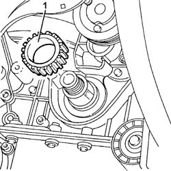
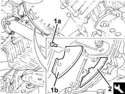
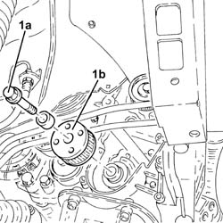

1032B44 TOOTHED DRIVE PULLEY - R + R WITH TIMING BELT REMOVED
- Path
- Procedures > 10 ENGINE UNIT > 1032 TIMING SYSTEM > 1032B BELT TIMING SYSTEM > 1032B44 TOOTHED DRIVE PULLEY - R + R WITH TIMING BELT REMOVED
- Kind
- repair procedure (removal / refitting; the operation number is the code)
- Applies to
- engines: 3.2 V6, 1.9 JTD 16V; all production periods
- Interactive page
- https://sloeber94.github.io/elrnDB-aGt/en/#/125000964
Applies to: engines: 3.2 V6; all production periods
 Removing
Removing
 Refitting
Refitting1. Remove the toothed drive pulley.

Applies to: engines: 3.2 V6; all production periods
Refitting
RemovingPlace the drive pulley back in its housing.
Applies to: engines: 1.9 JTD 16V; all production periods
Removing
Refitting1. Undo the bolts (1a) and remove the flywheel shield cover (1b).
2. Fit the flywheel lock.
 | Name | Country |
|---|---|---|
2 | Counter-torque | 1.860.846.001 |

Applies to: engines: 1.9 JTD 16V; all production periods
1. Undo the (left hand thread) bolt (1a) and remove the drive pulley (1b).

Applies to: engines: 1.9 JTD 16V; all production periods
Refitting
RemovingPlace the drive pulley back in its housing and secure it tightening the bolt to the recommended torque.
 | Fastening | Component | Ø | Value (daNm) |
|---|---|---|---|---|
- | Bolt with left hand thread | TOOTHED DRIVE PULLEY | M12 | 323 357 |
Remove the flywheel lock.
| Name | Country |
|---|---|---|
- | Counter-torque | 1.860.846.001 |
Place the flywheel shield back in its housing and secure it using the bolts.